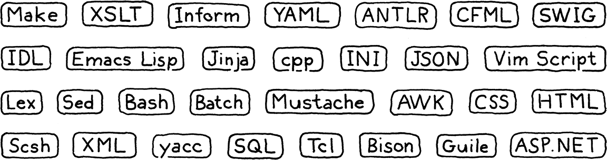

Introduction
This book is a work in progress!
×If you see a mistake, find something unclear, or have a suggestion, please let me know. To learn when new chapters are up, join the mailing list:
(I post about once a month. Don’t worry, I won’t spam you.)
Fairy tales are more than true: not because they tell us that dragons exist, but because they tell us that dragons can be beaten.”
Neil Gaiman
I’m really excited we’re going on this journey together. This is a book on implementing interpreters for programming languages. It’s also a book on how to design a language worth implementing. It’s the book I wished I had when I first started getting into languages, and it’s the book I’ve been writing in my head for nearly a decade.
In these pages, we will walk step by step through two complete interpreters for a full-featured language. I assume this is your first foray into languages, so I’ll cover each concept and line of code you need to build a complete, usable, fast language implementation.
In order to cram two full implementations inside one book without it turning into a doorstop, this text is lighter on theory than others. As we build each piece of the system, I will introduce the history and concepts behind it. I’ll try to get you familiar with the lingo so that if you ever find yourself in a cocktail party full of PL (programming language) researchers, you’ll fit in.
But we’re mostly going to spend our brain juice getting the language up and running. This is not to say theory isn’t important. Being able to reason precisely and formally about syntax and semantics is a vital skill when working on a language. But, personally, I learn best by doing. It’s hard for me to wade through paragraphs full of abstract concepts and really absorb them. But if I’ve coded something, ran it, and debugged it, then I get it.
That’s my goal for you. I want you to come away with a solid intuition of how a real language lives and breathes. My hope is that when you read other, more theoretical books later, the concepts there will firmly stick in your mind, adhered to this tangible substrate.
1 . 1 Why Learn This Stuff?
Every introduction to every language book seems to have this section. I don’t know what it is about programming languages that causes such existential doubt. I don’t think ornithology books worry about justifying their existence. They assume the reader loves birds and get moving.
But programming languages are a little different. I suppose it is true that the odds of any of us creating a broadly successful general-purpose programming language are slim. The designers of the world’s widely-used languages could fit in a Volkswagen bus, even without putting the pop top camper up. If joining that elite group was the only reason to learn languages, it would be hard to justify. Fortunately, it isn’t.
1 . 1 . 1 Little languages are everywhere
For every successful general-purpose language out there, there are a thousand successful niche ones. We used to call them “little languages”, but inflation in the jargon economy led today to the name “domain-specific languages”. These are pidgins tailor-built to a specific task. Things like application scripting languages, template engines, markup formats, and configuration files.

Almost every large software project needs a handful of these. When you can, it’s good to reuse an existing one instead of rolling your own. Once you factor in documentation, debuggers, editor support, syntax highlighting, and all of the other trappings, doing it yourself becomes a tall order.
But there’s still a good chance you’ll find yourself needing to whip up a parser or something when there isn’t an existing library that fits your needs. Even when there is one to reuse, you’ll inevitably end up needing to debug and maintain it and poke around in its guts.
1 . 1 . 2 Languages are great exercise
Long distance runners sometimes train with weights strapped to their ankles or at high altitudes where the atmosphere is thin. When they later unburden themselves, the new relative ease of light limbs and oxygen-rich air enables them to run farther and faster.
Implementing a language is a real test of programming skill. The code is complex and performance critical. You must master recursion, dynamic arrays, trees, graphs, and hash tables. You probably use hash tables at least in your day-to-day programming, but how well do you really understand them? Well, after we’ve crafted our own from scratch, I guarantee you will.
While I intend to show you that a programming language isn’t as daunting as you might believe, it is still a challenge. Rise to it, and you’ll come away a stronger programmer, and smarter about how you use data structures and algorithms in your day job.
1 . 1 . 3 One more reason
This last reason is hard for me to admit, because it’s so close to my heart. Ever since I learned to program as a kid, I felt there was something magical about languages. When I first tapped out BASIC programs one key at a time I couldn’t conceive how BASIC itself was made.
Later, the mixture of awe and terror my college friends used to refer to their compilers class was enough to convince me language hackers were a different breed of human. Some sort of wizards granted privileged access to arcane arts.
It’s a charming image, but it has a darker side. I didn’t feel like a wizard, so I was left thinking I lacked some in-born quality necessary to join the cabal. Though I’ve been fascinated by languages ever since I doodled made up keywords in my school notebook, it took me decades to muster the courage to try to really learn them. That “magical” quality, that sense of exclusivity, excluded me.
When I did finally start cobbling together my own little interpreters, I quickly learned that, of course, there is no magic at all. It’s just code, and the people who hack on languages are just people.
There are a few techniques you don’t often encounter outside of languages, and some parts are a little difficult. But not more difficult than other obstacles you’ve overcome. My hope is that if you’ve felt intimidated by languages, and this book helps you overcome that fear, maybe I’ll leave you just a tiny bit braver than you were before.
And, who knows, maybe you will make the next great language. Someone has to.
1 . 2 How the Book is Organized
This book is broken into three parts. You’re reading the first one now. It’s a couple of chapters to get you oriented, teach you some of the lingo language hackers use, and introduce you to Lox, the language we’ll be implementing.
Each of the other two parts builds one complete Lox interpreter. Within those parts, each chapter is structured the same. Every one takes a single language feature, teaches you the concepts behind it, and walks through an implementation of it.
It took a good bit of trial and error on my part, but I managed to carve up the two interpreters into chapter-sized chunks so that each builds on the previous ones. From the very first chapter, you’ll have a program you can run and play with. With each passing chapter, it grows increasingly full-featured until you eventually have a complete language.
Aside from copious, scintillating English prose, chapters have a few other delightful facets:
1 . 2 . 1 The code
We’re about crafting interpreters, so this book contains real code. Every single line of code needed is included, and each snippet tells you where to insert it in your ever-growing implementation.
Many other language books and language implementations use tools like Lex and Yacc, “compiler-compilers” to automatically generate some of the source files for an implementation from some higher level description. There are pros and cons to tools like those, and strong opinions—some might say religious convictions—on both sides.
We will abstain from using them here. I want to ensure there are no dark corners where magic and confusion can hide, so we’ll write everything by hand. As you’ll see, it’s not as bad as it sounds and it means you really will understand each line of code and how both interpreters work.
A book has different constraints from the “real world” and so the coding style
here might not always reflect the best way to write maintainable production
software. If I seem a little cavalier about, say, omitting private or
declaring a global variable, understand I do so to keep the code easier on your
eyes. The pages here aren’t as wide as your IDE and every character counts.
Also, the code doesn’t have many comments. That’s because each handful of lines
is surrounded by several paragraphs of honest-to-God prose explaining it. When
you write a book to accompany your program, you are welcome to omit comments
too. Otherwise, you should probably use // a little more than I do.
What this book doesn’t contain is the machinery needed to compile and run the code. I assume you can slap together a makefile or a project in your IDE of choice in order to get the code to run.
1 . 2 . 2 Snippets
Since the book contains literally every line of code needed for the implementations, the snippets are quite precise. Also, because I try to keep the program in a runnable state even when it’s half-implemented, sometimes we add temporary code that is replaced in later snippets.
A snippet with all the bells and whistles looks like this:
default:
in scanToken()
replace 1 line
if (isDigit(c)) { number(); } else { Lox.error(line, "Unexpected character."); }
break;
In the center, you have the new code being added in this snippet. It may have a few faded out lines above or below to show you where to insert it in the existing code. There is also a little blurb telling you which file and where in the file it goes. If it says “replace _ lines”, there was some previous code between the faded lines that you need to remove and replace with this snippet.
1 . 2 . 3 Asides
Asides contain biographical sketches, historical background, references to related topics, and suggestions of other areas to explore. There’s nothing that you need to know in them to understand later parts of the book, so you can skip them if you want. I won’t judge you, but I might be a little sad.
1 . 2 . 4 Challenges
Each chapter ends with a few exercises. Unlike textbook problem sets which tend to rehash material you already covered, these are to help you learn more than what’s in the chapter. They force you to step off the guided path and explore on your own. They will make you research other languages, figure out how to implement features or otherwise get you to strike out on your own.
Vanquish them and you’ll come away with a broader understanding and possibly a few bumps and scrapes. Or skip them if you want to stay inside the comfy confines of the tour bus. It’s your book.
1 . 2 . 5 Design notes
Most “programming language” books are strictly programming language implementation books. They rarely discuss how one might happen to design the language being implemented. Implementation is fun because it is so precisely defined. We programmers seem to have an affinity for things that are black and white, ones and zeroes.
Personally, I think the world only needs so many implementations of FORTRAN 77. At some point, you find yourself designing a new language. Once you start playing that game, then the softer, human side of the equation becomes paramount. Things like what features are easy to learn, how to balance innovation and familiarity, what syntax is more readable and to whom.
All of that stuff profoundly affects the success of your new language. I want your language to succeed, so in some chapters I end with a “design note”, a little essay on some corner of the human aspect of programming languages. I’m no expert on this—I don’t know if anyone really is—so take these with a large pinch of salt. That should make them tastier food for thought, which is my main aim.
1 . 3 The First Interpreter
We’ll write our first interpreter, jlox, in Java. The focus is on concepts. We’ll write the simplest, cleanest code we can to correctly implement the semantics of the language. This will get us comfortable with the basic techniques and also hone our understanding of exactly how the language is supposed to behave.
Java is a great language for this. It’s high level enough that we don’t get overwhelmed by fiddly implementation details, but it’s still pretty explicit. Unlike scripting languages, there tends to be less magic under the hood, and you’ve got static types to see what data structures you’re working with.
I also chose it specifically because it is an object-oriented language. That paradigm swept the programming world in the 90s and is now the dominant way of thinking for millions of programmers. Odds are good you’re already used to organizing things into classes and methods, so we’ll keep you in that comfort zone.
While academic language folks sometimes look down on object-oriented languages, the reality is that they are widely used even for language work. GCC and LLVM are written in C++, as are most JavaScript virtual machines. Object-oriented languages are ubiquitous and the tools and compilers for a language are often written in the same language.
And, finally, Java is hugely popular. That means there’s a good chance you already know it, so there’s less for you to learn to get going in the book. If you aren’t that familiar with Java, don’t freak out. I try to stick to a fairly minimal subset of it. I use the diamond operator from Java 7 to makes things a little more terse, but that’s about it as far as “advanced” features go. If you know another object-oriented language like C# or C++, you can probably muddle through fine.
By the end of part II, we’ll have a simple, readable implementation. What we won’t have is a fast one. It also leans on the Java virtual machine’s runtime facilities, but we want to learn how Java itself implements those things.
1 . 4 The Second Interpreter
So in the next part, we’ll start all over again, but this time in C. C is the perfect language for understanding how an implementation really works, all the way down to the bytes in memory and the code flowing through the CPU.
A big reason that we’re using C is so I can show you things C is particularly good at, but that does mean you’ll need to be pretty handy with it. You don’t have to be the reincarnation of Dennis Ritchie, but you shouldn’t be spooked by pointers either.
If you aren’t there yet, pick up an introductory book on C and chew through it, then come back here when you’re done. In return, you’ll come away from this book an even stronger C programmer. That’s useful given how many language implementations are written in C: Lua, CPython, and Ruby’s MRI, to name a few.
In our C interpreter, clox, we are forced to implement for ourselves all the things Java gave us for free. We’ll write our own dynamic array and hash table. We’ll decide how objects are represented in memory, and build a garbage collector to reclaim it.
Our Java implementation was focused on being correct. Now that we have that down, we’ll turn to also being fast. Our C interpreter will contain a compiler that translates the code to an efficient bytecode representation (don’t worry, I’ll get into what that means soon) which it then executes. This is the same technique used by implementations of Lua, Python, Ruby, PHP and many other successful languages.
We’ll even try our hand at benchmarking and optimization. By the end we’ll have a robust, accurate, fast interpreter for our language, able to keep up with other professional caliber implementations out there. Not bad for one book and a few thousand lines of code.
Challenges
-
There are at least six domain-specific languages used in the little system I cobbled together to write and publish this book. What are they?
-
Get a “Hello, world!” program written and running in Java. Set up whatever Makefiles or IDE projects you need to get it working. If you have a debugger, get comfortable with it and step through your program as it runs.
-
Do the same thing for C. To get some practice with pointers, define a doubly-linked list of heap-allocated strings. Write functions to insert, find, and delete items from it. Test them.
Design Note: What's in a Name?
One of the hardest challenges in writing this book was coming up with a name for the language it implements. I went through pages of candidates before I found one that worked. As you’ll discover on the first day you start building your own language, naming is deviously hard. A good name satisfies a few criteria:
-
It isn’t in use. You can run into all sorts of trouble, legal and social, if you inadvertently step on someone else’s name.
-
It’s easy to pronounce. If things go well, hordes of people will be saying and writing your language’s name. Anything longer than a couple of syllables or a handful of letters will annoy them to no end.
-
It’s distinct enough to search for. People will Google your language’s name to find docs for it, so you want a word that’s rare enough that most results point to your docs. Though, with the amount of AI most search engines are packing today, that’s less of an issue. Still, you won’t be doing your users any favors if you name your language “for”.
-
It doesn’t have negative connotations across a number of cultures. This is hard to guard for, but it’s worth considering. The designer of Nimrod ended up renaming his language to “Nim” because too many people only remember that Bugs Bunny used “Nimrod” as an insult.
If your potential name makes it through that gauntlet, keep it. Don’t get hung up on trying to find an appellation that captures the quintessence of your language. If the names of the world’s other successful languages teach us anything, it’s that the name doesn’t matter much. All you need is a reasonably unique token.